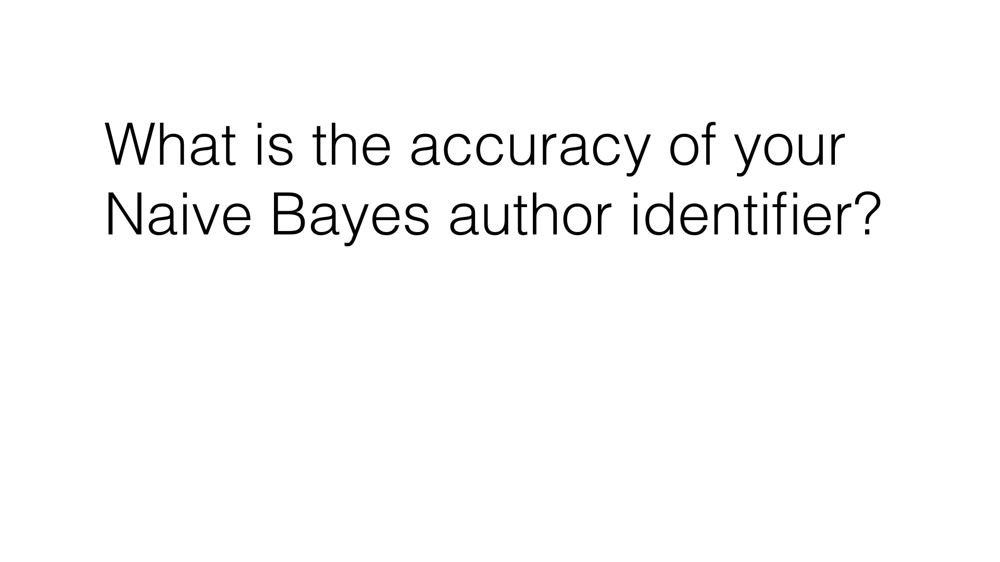

42. 作者身份准确率
作者身份准确率
Question:
在 naive_bayes/nb_author_id.py 中创建和训练朴素贝叶斯分类器，用其为测试集进行预测。准确率是多少？
在训练期间，你可能会看到以下错误：“用户警告：分数重复。结果可能取决于特征排序，或者你对回归任务使用了分类分数。” 警告（“分数重复。结果可能取决于特征排序。”）
邮件中两个以上的单词恰巧具有相同的使用模式时，会出现这一警告—对算法而言，这表示两个特征是相同的。当重复特征出现时，一些算法实际上会中断（数学上无法运行），或给出多个不同的答案（取决于特征排序），然后 sklearn 发出警告。这种信息能起到帮助作用，所以我们无需担心。
Start Quiz:

INSTRUCTOR NOTE:
在此问题中，一些学员在执行代码时会遇到内存问题。为了降低运行代码时看到内存错误的提示，我们建议你使用 RAM 至少为 2GB 的计算机。如果你发现代码造成内存错误，你也可以尝试在 email_preprocess.py 文件中设置 test_size = 0.5。